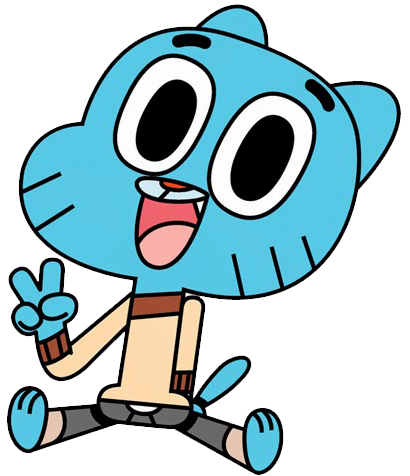
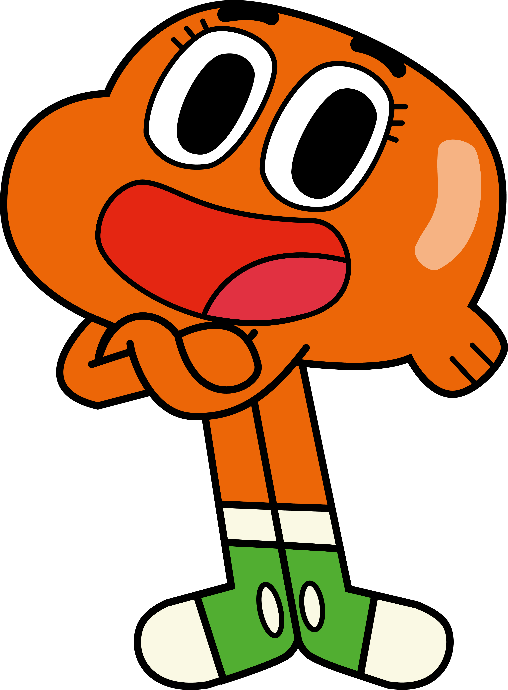
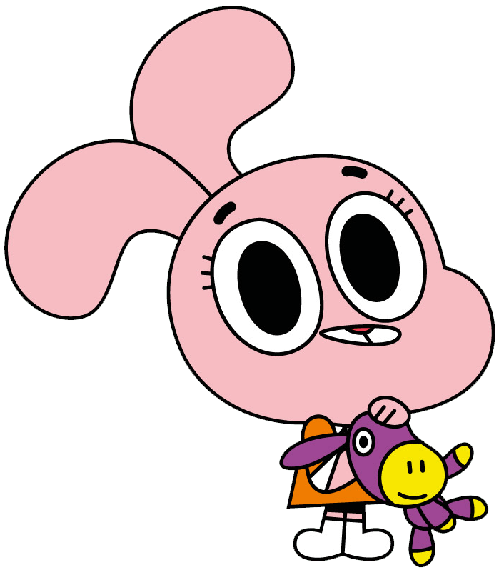
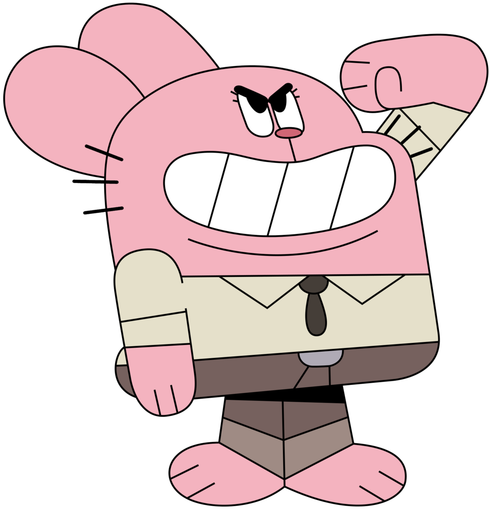
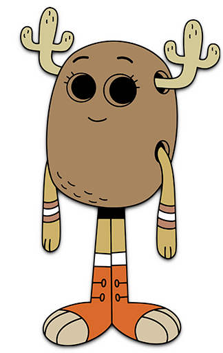

Se você quer acompanhar as divertidas e caóticas aventuras de Gumball, Darwin e toda a família Watterson, você pode assistir à série clicando no link abaixo. Não perca nenhum episódio dessa animação incrível e cheia de humor!
Clique aqui para assistir
O Incrível Mundo de Gumball!
Personagens
Gumball
Darwin
Ana
Richard
 Nicole
Nicole
Penny